A pharmaceutical manufacturer must supply 30 batches of its new medication in the next quarter, then 25, 10, and 35 in successive quarters. Each quarter in which the company makes product requires $100,000 setup, plus $3000 per batch produced. There is no limit on production capacity. Batches can be held in inventory, but the cost is a high $5000 per batch per quarter. The company seeks a minimum total cost production plan.
- (5 points)
Explain why this problem can be approached by dynamic programming, with states 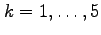 representing the reaching of quarter 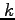 with all earlier demand fulfilled and no inventory on hand.
- (10 points)
Sketch the digraph corresponding to the dynamic program structure of part (a). Include costs on all arcs.
- (5 points)
Explain why the feasible production plans correspond exactly to the paths from node 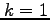 to node 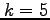 in your digraph.
A node packing on a graph 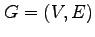 is a subset of the vertices so that
no two vertices in the subset share an edge.
If each vertex has a weight 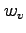,
the weighted node packing problem on a graph is to
choose a node packing of maximum weight
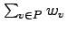.
This can be formulated as an integer programming problem by
introducing a binary variable 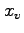 for each vertex 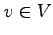 and then
solving the problem
Let be the complete graph on three vertices 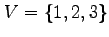,
so has undirected edges (1,2), (2,3), and (1,3).
Let 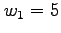, 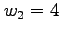, and 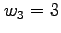.
Solving the linear programming relaxation of 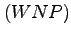 for this problem gives an
optimal tableau
where 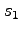, , and are the slack variables in .
- (10 points)
Why is the inequality 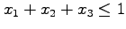 a valid inequality that could be added to ?
- (10 points)
Add the inequality to and reoptimize. (You should obtain an integral solution.)
- (20 points)
Solve this integer program using branch-and-bound. It is acceptable to solve the LP relaxations graphically or by inspection; the problem is illustrated below.
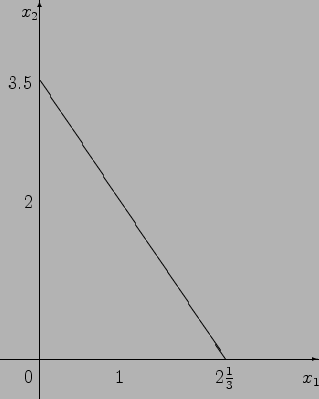
- (15 points)
Solve 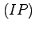 using dynamic programming. Be sure to state the recursion you use to get 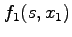 in terms of 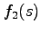, and to explain your stages and state variable(s).
The linear programming problem
has dual
- (3 points)
Let 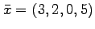 and 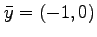. Show that this is an optimal solution to the primal-dual pair and 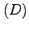.
- (3 points)
Is 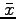 a basic feasible solution? Justify your answer.
- (3 points)
Find two optimal basic feasible solutions to , graphically. Label on your graph.
- (3 points)
Show that is degenerate, graphically. Label on your graph.
- (3 points)
Give an integral feasible interior point for .
- (10 points)
Let 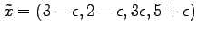 and 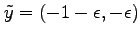, where Let denote the corresponding dual slacks. Show that all complementary slackness terms 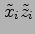 lie between and . Hence argue that 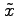 is close to being an optimal solution to the log barrier problem

(Hint: For example, you could argue that almost satisfies the optimality conditions for 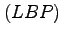.)